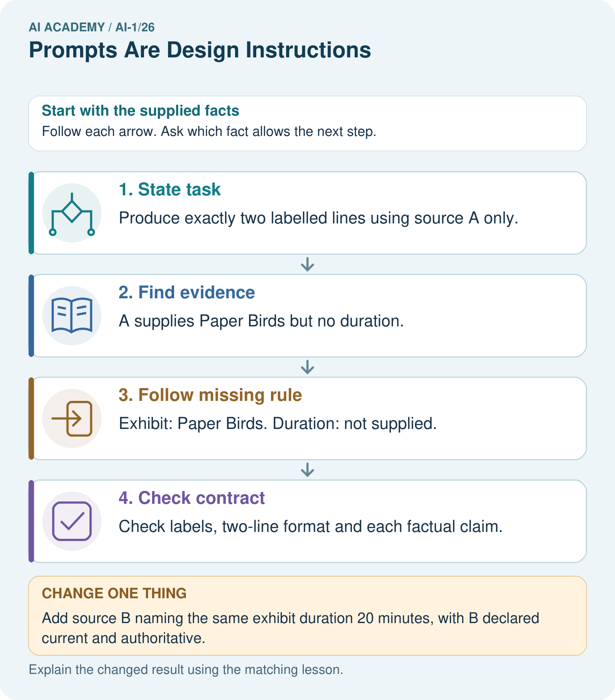

AI Academy · Level 1 · Grade 6 · Week 26 · Workbook
Prompts Are Design Instructions
Learn to understand, design, build, test and explain AI systems responsibly.
Project: Helpful Classroom Sorter
Workbook · 1 of 20
Recall and choose your starting point
Try the recall before opening notes. Then use a different colour or a labelled second line to correct your explanation.
Generate, Retrieve, or Calculate?
Without opening the old lesson, explain one key idea from Generate, Retrieve, or Calculate?. Give an example and a mistake that the idea helps you avoid.
Fair for Whom?
Without opening the old lesson, explain one key idea from Fair for Whom?. Give an example and a mistake that the idea helps you avoid.
Recommendations
Without opening the old lesson, explain one key idea from Recommendations. Give an example and a mistake that the idea helps you avoid.
Workbook · 2 of 20
Practise with fading help
Use W2: Score a response by separate criteria for Specifying and testing prompts. Record the answer once; the lesson and workbook refer to the same attempt.
| Given inputs | Procedure I chose | Middle steps | Result and check |
|---|---|---|---|
Workbook · 3 of 20
Individual reasoning check
Use the worked case for Specifying and testing prompts. Proposed explanation: “A tidy response is a correct response”. Decide whether this explanation is supported. Point to the step or supplied fact that decides; explain your repair if needed.
Workbook · 4 of 20
Independent transfer case
Independent case: Specify and test a new exhibit card
Fictional record X says an exhibit is called Shadow Pairs and is in Hall 2; no opening time is given. Write a complete prompt for a Grade 6 card with exactly three labelled lines: Title, Location, Opening. Limit facts to supplied records, define missing and conflicting values and prohibit added claims. Give two test inputs and expected outputs: original X, then X with an opening time of 10 am added.
Attempt this case before feedback. Record any help. Earlier examples below are further practice; a case already practised with feedback cannot establish fresh transfer.
Workbook · 5 of 20
Your learning target
Write a request for a three-bullet explanation of evaporation for Grade 6 using only a supplied paragraph. Create three separately checkable acceptance criteria. What should happen if the paragraph does not explain evaporation?
Workbook · 6 of 20
Solve the given case
The prompt says make it good; the desired output is a four-line rain poem using simple words.
Write a checkable prompt.
Show your trace, calculation or evidence
Workbook · 7 of 20
Check a changed case
Improve this prompt: tell me about space. Specify a reader, a focused task and an output format suitable for a young learner.
My independent answer and reason
Week 26 Test and reflect
Workbook · 8 of 20
Design a revealing test
Create a changed input, boundary case or missing-information case. Write the expected answer or safe response before testing.
| Test record | My evidence |
|---|---|
| Changed input or condition | |
| Expected answer or fallback | |
| Observed result | |
| Why the result occurred |
Workbook · 9 of 20
Project checkpoint
Write a transparent instruction for any generative explanation in the sorter and forbid invented item facts.
The project change and evidence I will keep
Workbook · 10 of 20
Self check
I can explain the mechanism. I can show evidence. I can handle a changed case. I can name a limit. Mark each as not yet, with help or independently, and attach supporting work.
Teacher review ____________________ Next step ____________________
Workbook · 11 of 20
Transfer practice from the original programme
Write a request for a three-bullet explanation of evaporation for Grade 6 using only a supplied paragraph. Create three separately checkable acceptance criteria. What should happen if the paragraph does not explain evaporation?
Record support used: none, hint or teacher explanation.
Workbook · 12 of 20
W1 Find what the vague request leaves open
The request says “Write something good about our club.” Name four decisions it leaves open. Then explain how source C, the Grade 6 audience and four labelled lines make the task easier to check.
Workbook · 13 of 20
W2 Score a response by separate criteria
For original C, a card gives four correctly labelled lines but says Time: 3 pm. All other values match C. State which format and evidence checks pass or fail. Is the card acceptable overall? Explain.
Workbook · 14 of 20
W3 Handle disagreement without choosing a favourite
C gives Room 7 and D gives Room 9 for the same club event, with no replacement or priority stated. Both agree on Monday and paper, and neither gives a time. Under P2, write the four output values and explain why the room cannot be selected from confidence or wording alone.
Workbook · 15 of 20
W4 Specify and test a new exhibit card
Fictional record X says an exhibit is called Shadow Pairs and is in Hall 2; no opening time is given. Write a complete prompt for a Grade 6 card with exactly three labelled lines: Title, Location, Opening. Limit facts to supplied records, define missing and conflicting values and prohibit added claims. Give two test inputs and expected outputs: original X, then X with an opening time of 10 am added.
Workbook · 16 of 20
W5 Preserve the comparison evidence
A pupil tries P1 once and P2 five times, then compares the P1 response only with the best P2 response and declares P2 always reliable. Identify two problems and design a fairer small comparison. State a conclusion the evidence could support.
Workbook · 17 of 20
Feedback, return check and learning record
| Evidence | My record |
|---|---|
| Worked alone / hint / model | |
| First step I repaired and why | |
| New case checked later; date and result | |
| What I can now explain without notes | |
| One remaining question |
Revisit this idea with your teacher after a delay. Familiarity is different from explaining and using it on a changed case.
Workbook · 18 of 20
Pictorial case practice: Prompts Are Design Instructions
A fictional club needs a short exhibit card, without guesses.
Source A: exhibit Paper Birds, location Shelf 2. No duration appears.
Required output: two labelled lines, Exhibit and Duration; missing values must say not supplied.

What must happen if B instead conflicts with another equally authoritative duration record?
Support used: alone / hint / worked example. This record is practice evidence.
Project connection: Specify sorter input, output fields, evidence limits and missing/conflict behavior before improving its wording.
Workbook · 19 of 20
Project portfolio milestone
Project: Helpful Classroom Sorter
Current milestone: Prepare the demonstration. Gather reproducible instructions, evidence, access checks and remaining limitations.
Specify sorter input, output fields, evidence limits and missing/conflict behavior before improving its wording.
| Evidence to keep | My record |
|---|---|
| This week’s input and deciding step | |
| Prediction and actual result (or labelled paper trace) | |
| One change since the previous checkpoint and why | |
| One error or limit and the next test |
Workbook · 20 of 20
Supported practice and learning evidence
Use this supported practice once, in the browser or on paper. Keep the reserved independent assessment for a separate first attempt before teacher feedback.
A fictional club needs a short exhibit card, without guesses.
Practice 1: explain the deciding evidence
Which labelled step matches this detail? Check labels, two-line format and each factual claim.
1. State task
2. Follow missing rule
3. Find evidence
4. Check contract
Hint if needed: Read the steps in the pictorial case. Match the supplied detail to the stage that performs or records it.
After your attempt, compare with the supported explanation: Check contract Check labels, two-line format and each factual claim. A useful prompt describes both the wanted answer and what to do when evidence is insufficient. Asking for a duration does not create one. Examples can demonstrate the format, but they must not become sources of event facts. Check content support separately from whether the answer looks tidy.
Practice 2: explain the deciding evidence
Changed-case practice: Add source B naming the same exhibit duration 20 minutes, with B declared current and authoritative. Which conclusion is supported by the supplied facts?
1. We can decide the result without examining the changed input or the procedure.
2. This one example guarantees correct results for every future input.
3. Duration becomes 20 minutes.
Hint if needed: Use the changed condition and the deciding step in the pictorial trace. The answer must say what follows from those facts.
After your attempt, compare with the supported explanation: Duration becomes 20 minutes. There is now an authorised source for the previously missing field.
Repair a missing building block
Review Generate, Retrieve, or Calculate? (ai-1/25). Goal: Distinguish retrieving a record, calculating from inputs and generating wording. Short practice: Label each arrow with its operation. Can the system add snacks because invitations often mention them?. Return to this week and explain what you changed.
Review Fair for Whom? (ai-1/23). Goal: Compute a correct-out-of-assessed fraction and explain its denominator. Short practice: Which group loses performance under N, and can total improvement erase that fact?. Return to this week and explain what you changed.
Review Recommendations (ai-1/20). Goal: Apply eligibility requirements before ranking candidates by preferences. Short practice: Why does the recommendation change without changing anyone’s preferences?. Return to this week and explain what you changed.
Keep your completed work
Use Download completed work in the hosted lesson to export your answers, reflections, practice feedback and code-run evidence. Open the HTML copy to read or print it. Drafts stay in this browser when storage is available; clear drafts on a shared device.